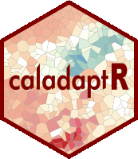
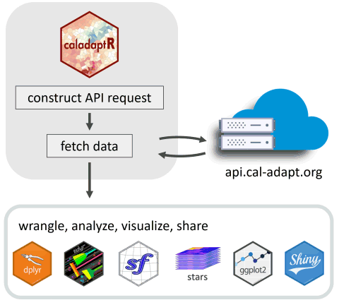
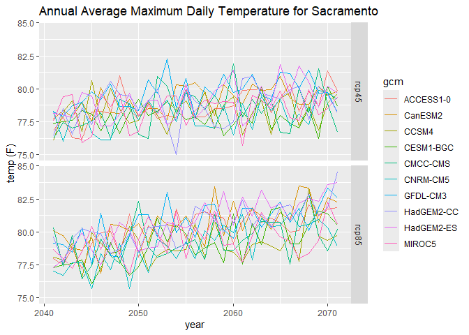
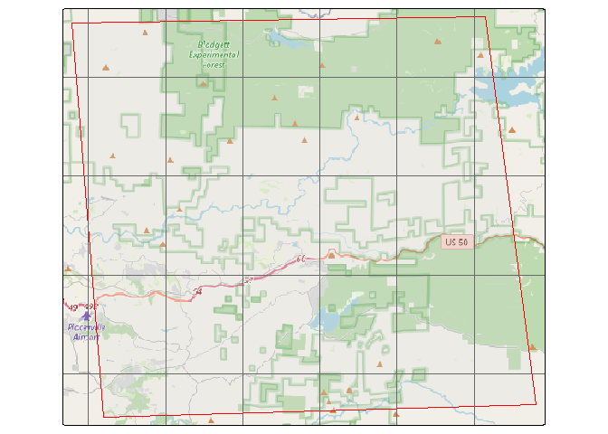
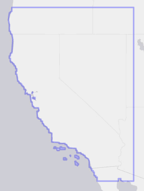

caladaptR 
Features
caladaptr is an API client that makes it easier to work with data from Cal-Adapt.org in R. The niche of caladaptr is to bring data into R after which you can use other packages for analysis and visualization:

caladaptr allows you to:
- query any of Cal-Adapt’s ~950 raster data layers
- retrieve values by point, a preset area-of-interest (e.g., census tract), or a user-provided polygon
- cache large queries in a local SQLite database
- download cropped rasters as TIFs and import them into R as stars objects
caladaptr functions have been designed to:
- be pipe friendly
- return tibbles for compatibility with tidyverse packages
- return values with encoded units (managed by the units package)
- accept and return
sfdata frames where spatial objects are needed - return rasters as spatiotemporal arrays (
starsobjects)
caladaptr does not support downloading the original NetCDF rasters nor station data (e.g., sea level rise, stream gauges). For these data, see the Data Download tool or FTP server on Cal-Adapt.org.
Beta status status means:
- the package is still under development
- there’s a small possibility that updates will not be backward compatible
- user feedback and input is extremely welcome and will be used to guide future development!
Installation
caladaptr is available on GitHub. To install it, you need the remotes (or devtools) package. Windows users also need to have RTools installed.
library(remotes)
remotes::install_github("ucanr-igis/caladaptr")General Workflow
In general, there are three steps to retrieving Cal-Adapt data with caladaptr:
Create an ‘API request object’
Feed the API request into a function that fetches data (either values or rasters)
Wrangle the data that comes back into the format required for your analysis
Example: Projected Annual Temperature at a Point Location
In this example, we’ll get the projected maximum daily temperature for a point location near Sacramento, averaged by calendar year from 2040-2070, for 10 GCMs and 2 emissions scenarios. Then we’ll plot them.
1. Create an API request object
Creating an API request object is a bit like filling in an order form. The request is essentially a description of the data you want.
There are a number of constructor functions you can mix and match to create an API request object. Below we create a request for 30 years of projected annual average maximum daily temperature from the LOCA downscaled CMIP5 climate projections from Scripps, for a single point location.
library(caladaptr)
#> caladaptr (version 0.6.3)
#> URL: https://ucanr-igis.github.io/caladaptr
#> Bug reports: https://github.com/ucanr-igis/caladaptr/issues
sac_tasmax_cap <- ca_loc_pt(coords = c(-121.4687, 38.5938)) %>% ## specify a location
ca_gcm(c("HadGEM2-ES", "CNRM-CM5", "CanESM2","MIROC5", ## select GCM(s)
"ACCESS1-0", "CCSM4", "CESM1-BGC",
"CMCC-CMS", "GFDL-CM3", "HadGEM2-CC")) %>%
ca_scenario(c("rcp45","rcp85")) %>% ## select emission scenarios(s)
ca_cvar(c("tasmax")) %>% ## select climate variables
ca_period("year") %>% ## select a temporal aggregation period
ca_years(start = 2040, end = 2070) ## select start and end dates
sac_tasmax_cap
#> Cal-Adapt API Request
#> Location(s):
#> x: -121.469
#> y: 38.594
#> Variable(s): tasmax
#> Temporal aggregration period(s): year
#> GCM(s): HadGEM2-ES, CNRM-CM5, CanESM2, MIROC5, ACCESS1-0, CCSM4, CESM1-BGC, CMCC-CMS, GFDL-CM3, HadGEM2-CC
#> Scenario(s): rcp45, rcp85
#> Dates: 2040-01-01 to 2070-12-31
#> 2. Fetch data
Functions that fetch data from Cal-Adapt include ca_getvals_tbl(), ca_getvals_db() (see Large Queries vignette), and ca_getrst_stars() (see Rasters Part I vignette). Below we’ll fetch data into a tibble by passing the API request to ca_getvals_tbl():
sac_tasmax_tbl <- sac_tasmax_cap %>% ca_getvals_tbl(quiet = TRUE)
head(sac_tasmax_tbl)
#> # A tibble: 6 x 8
#> id cvar period gcm scenario spag dt val
#> <int> <fct> <fct> <fct> <fct> <fct> <chr> [K]
#> 1 1 tasmax year HadGEM2-ES rcp45 none 2040-12-31 299.
#> 2 1 tasmax year HadGEM2-ES rcp45 none 2041-12-31 299.
#> 3 1 tasmax year HadGEM2-ES rcp45 none 2042-12-31 299.
#> 4 1 tasmax year HadGEM2-ES rcp45 none 2043-12-31 300.
#> 5 1 tasmax year HadGEM2-ES rcp45 none 2044-12-31 300.
#> 6 1 tasmax year HadGEM2-ES rcp45 none 2045-12-31 298.
dim(sac_tasmax_tbl)
#> [1] 620 83. Wrangle Data
Depending what your goal it, you may need to add or delete columns, reshape the data, group rows, etc. Below we’ll add a column for Fahrenheit using set_units() from the units package.
## Add a column with Fahrenheit units
library(dplyr)
library(units)
sac_tasmax_tbl2 <- sac_tasmax_tbl %>% mutate(temp_f = set_units(val, degF))
head(sac_tasmax_tbl2)
#> # A tibble: 6 x 9
#> id cvar period gcm scenario spag dt val temp_f
#> <int> <fct> <fct> <fct> <fct> <fct> <chr> [K] [degF]
#> 1 1 tasmax year HadGEM2-ES rcp45 none 2040-12-31 299. 78.1
#> 2 1 tasmax year HadGEM2-ES rcp45 none 2041-12-31 299. 78.0
#> 3 1 tasmax year HadGEM2-ES rcp45 none 2042-12-31 299. 77.8
#> 4 1 tasmax year HadGEM2-ES rcp45 none 2043-12-31 300. 79.7
#> 5 1 tasmax year HadGEM2-ES rcp45 none 2044-12-31 300. 79.5
#> 6 1 tasmax year HadGEM2-ES rcp45 none 2045-12-31 298. 77.2Now we can plot it:
library(ggplot2)
ggplot(data = sac_tasmax_tbl2,
aes(x = as.Date(dt), y = as.numeric(temp_f))) +
geom_line(aes(color=gcm)) +
facet_grid(scenario ~ .) +
labs(title = "Annual Average Maximum Daily Temperature for Sacramento", x = "year", y = "temp (F)")
Constructing API Requests
API request objects are constructed by stringing together functions that provide the key elements of the request, including the location(s), dataset(s), and time frame.
Location functions (pick one):
| Function | Location Type |
|---|---|
ca_loc_pt() |
points in matrices |
ca_loc_aoipreset() |
preset areas-of-interest |
ca_loc_sf( ) |
user-supplied sf object (point or polygon) |
Date functions (pick one):
| Function | Date Type |
|---|---|
ca_dates() |
specific dates |
ca_years() |
years |
Dataset functions (pick one group):
| Functions | Dataset |
|---|---|
ca_gcm() + ca_scenario() + ca_cvar() + ca_period()
|
LOCA downscaled modeled climate data (including all Scripps and VIC) |
ca_livneh() + ca_cvar() + ca_period()
|
Livneh data (observed historical) |
ca_slug() |
Everything else |
ca_example_apireq() is a convenience function that returns sample API requests for testing. You can use ca_preflight() to check an API request for errors. Plotting an API request will show the location(s), with an option to overlay the loca grid cells:
samp_cap <- ca_example_apireq(3)
samp_cap %>% ca_preflight()
#> General issues
#> - none found
#> Issues for querying values
#> - none found
#> Issues for downloading rasters
#> - none found
plot(samp_cap, locagrid = TRUE, static = TRUE)
For more examples, including retrieving data for a preset area-of-interest (i.e., census tracts), see the API Requests vignette and ‘R Notebooks’ on the website.
Constants
To help you pass arguments for the various constructor functions, caladaptr provides the following constants:
## Climate Variables
cvars
#> [1] "tasmax" "tasmin" "pr" "swe" "baseflow"
#> [6] "ET" "rainfall" "runoff" "snowfall" "soilMoist1"
#> [11] "Tair"
## Global Climate Models
## Note: the first 4 are the 'priority' models recommended under California's 4th Climate Change Assessment.
gcms
#> [1] "HadGEM2-ES" "CNRM-CM5" "CanESM2" "MIROC5" "ACCESS1-0"
#> [6] "CCSM4" "CESM1-BGC" "CMCC-CMS" "GFDL-CM3" "HadGEM2-CC"
#> [11] "ens32avg" "ens32max" "ens32min"
## Emission scenarios
scenarios
#> [1] "rcp45" "rcp85" "historical"
## Temporal resolution periods
periods
#> [1] "day" "month" "year" "30yavg"Data Catalog
caladaptr can not tell you which climate data you need for your project. Nor will it teach you how to use climate data appropriately or wisely. However it does have a copy of the Cal-Adapt raster series data catalog, so you can see what’s available and specify the datasets you need.
To view the entire data catalog in a RStudio Viewer pane, run the following. You can then use the filter button to find datasets that match a key word.
View(ca_catalog_rs())You can also search for datasets using ca_catalog_search(), and download a fresh copy of the catalog from Cal-Adapt using ca_catalog_fetch().
Most / all of the Cal-Adapt rasters series have been downscaled to approximately 6km (3.7 mi) using the LOCA downscaling method, and are available for the coverage area shown below. For a finer scale analysis, you can download the LOCA grid cells as a polygon layer using ca_locagrid_geom().
